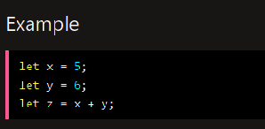
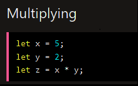
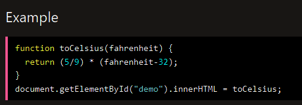
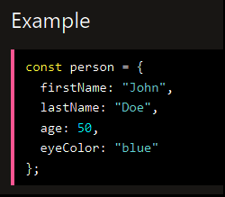
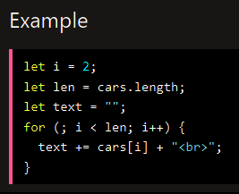
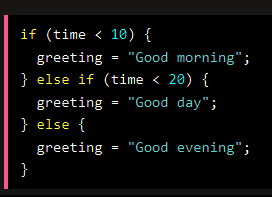

Wprowadzenie
JavaScript jest językiem skryptowym, który jest głównie używany do tworzenia interaktywnych elementów na stronach internetowych. Może być używany zarówno na stronie klienta (w przeglądarce), jak i na stronie serwera (np. za pomocą Node.js).
Zmienne
Zmienne są pojemnikami, które przechowują dane. Aby utworzyć zmienną, należy użyć słowa kluczowego "var", "let" lub "const" i przypisać jej jakąś wartość. Przykład:
Operatory
Operatory pozwalają na wykonywanie różnych działań matematycznych i logicznych na zmiennych. Przykłady operatorów to: + (dodawanie), - (odejmowanie), * (mnożenie), / (dzielenie) itp. Przykład:
Funkcje
Funkcje to fragmenty kodu, które można wykonać wielokrotnie w różnych miejscach programu. Aby utworzyć funkcję, należy użyć słowa kluczowego "function" i przypisać jej nazwę oraz argumenty. Przykład:
Obiekty
Obiekty pozwalają na grupowanie różnych danych i funkcji w jednym miejscu. Aby utworzyć obiekt, należy użyć nawiasów klamrowych {} i przypisać mu różne właściwości i metody. Przykład:
Pętle
Pętle pozwalają na powtarzanie fragmentów kodu określoną liczbę razy lub dopóki warunek jest spełniony. Przykłady pętli to "for", "while" i "do-while". Przykład:
Instrukcje warunkowe
Instrukcje warunkowe pozwalają na wykonywanie różnych fragmentów kodu w zależności od spełnienia określonego warunku. Przykład instrukcji warunkowej to "if-else". Przykład:
